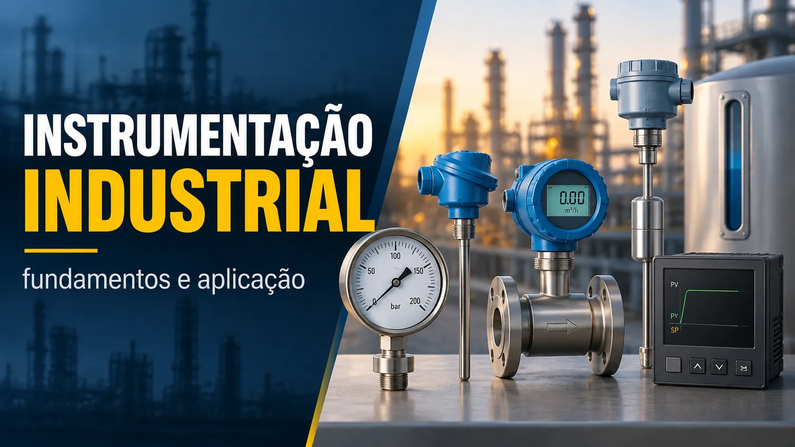

Instrumentação Industrial: o que é e por que é essencial na automação
Conteúdo técnico: ALOGY Engenharia · Atualizado em: 11/09/2026

A instrumentação industrial é uma das bases mais importantes da automação. É ela que permite medir, transmitir, indicar, registrar e controlar variáveis de processo como pressão, temperatura, vazão, nível, pH, condutividade e outras grandezas fundamentais para a operação segura e eficiente de uma planta industrial.
Em termos práticos, a instrumentação transforma fenômenos físicos do processo em sinais que possam ser interpretados por PLC/CLP, DCS, SCADA, IHM e outros sistemas de automação. Sem uma medição confiável, toda a lógica de controle perde qualidade.
O que é instrumentação industrial?
Instrumentação industrial é o conjunto de técnicas, equipamentos e procedimentos usados para medir e controlar variáveis de processo. Isso inclui sensores, transmissores, indicadores, controladores, elementos finais de controle, redes de comunicação, painéis, testes e documentação técnica.
O objetivo é fornecer informações confiáveis sobre o processo para que operação, manutenção e engenharia tomem decisões técnicas com base em evidências.
Quais são as principais variáveis medidas?
Em praticamente toda planta industrial existem variáveis críticas que precisam ser monitoradas e controladas. As mais comuns são:
- Temperatura: aquecimento, resfriamento, reações e monitoramento térmico.
- Pressão: vasos, tubulações, filtros, linhas e equipamentos de processo.
- Vazão: quantidade de fluido que passa por uma linha ou equipamento.
- Nível: tanques, reservatórios, reatores e silos.
- pH, ORP e condutividade: análises químicas e tratamento de processo.
A escolha do instrumento depende do processo, faixa, fluido, condições de operação, precisão necessária, instalação e estratégia de controle.
Sensores e transmissores: qual a diferença?
O sensor é o elemento que responde à variável física. O transmissor condiciona essa medição e a converte em um sinal utilizável pelo sistema de automação. Em muitas aplicações, sensor e transmissor trabalham como um conjunto.
Um transmissor de pressão, por exemplo, pode converter a grandeza medida em um sinal 4-20 mA e também disponibilizar variáveis e diagnóstico via HART.
Por que o sinal 4-20 mA é tão importante?
O 4-20 mA continua amplamente utilizado porque é robusto para transmissão analógica em ambiente industrial e permite representar uma faixa de engenharia com zero vivo. Em uma escala linear típica, 4 mA corresponde ao LRV e 20 mA ao URV.
Em campo, porém, corrente correta não garante sozinha que toda a malha está correta. É preciso conferir alimentação, carga, cabo, escala do PLC/DCS, indicação e, quando aplicável, comunicação HART.
O papel da instrumentação na automação
Todo sistema de automação depende da qualidade da informação recebida. Se o instrumento mede errado, transmite com erro ou está mal especificado, o controlador pode atuar sobre uma informação incorreta.
Por isso, seleção, instalação, configuração, calibração, identificação e loop check fazem parte da confiabilidade da malha, e não apenas da manutenção do instrumento isolado.
Malha de controle: onde a instrumentação entra?
Em uma malha de controle, a instrumentação participa desde a medição até o elemento final. O transmissor mede a variável, envia a informação ao controlador, o sistema compara com o setpoint e atua por meio de uma válvula de controle, VFD ou outro elemento final.
Essa visão ponta a ponta é importante para diagnóstico: uma diferença pode estar no sensor, transmissor, sinal, cartão analógico, escala de engenharia, lógica, posicionador ou no próprio processo.
Documentação e organização também fazem parte
Diagramas de malha, lista de instrumentos, datasheets, identificação de cabos e bornes, LRV/URV, ranges, folhas de calibração e registros de commissioning reduzem tempo de diagnóstico e dão rastreabilidade às intervenções.
Roteiro de decisão: da variável à evidência
Antes de escolher um instrumento, defina qual decisão a medição precisa sustentar. A mesma variável pode exigir soluções diferentes quando serve apenas para indicação, para uma malha de controle, para balanço de processo ou para proteção.
| Pergunta | O que registrar | Por que muda a escolha |
|---|---|---|
| Qual variável e faixa real? | Valores normal, mínimo, máximo e condições de partida. | Evita selecionar apenas pela faixa nominal do catálogo. |
| Qual é a decisão? | Indicação, controle, registro, diagnóstico ou proteção. | Define requisitos de resposta, disponibilidade e evidência. |
| Como é o processo? | Fluido, temperatura, pressão, materiais, acesso e ambiente. | Orienta tecnologia, conexão, proteção e instalação. |
| Como o dado chega ao usuário? | Sinal, alimentação, protocolo, escala, TAG e destino. | Permite verificar a cadeia completa, não só o sensor. |
| Como será verificado? | Referência, tolerância de uso, registro e responsável. | Transforma a medição em evidência rastreável. |
Exemplo delimitado: medir pressão para diagnóstico
Considere uma linha em que a equipe quer investigar perda de carga. Antes de selecionar o transmissor, registre pontos de medição, faixa esperada em cada condição, menor diferença que precisa ser distinguida e frequência de leitura. Depois confira tomada de impulso, posição de instalação, escala no sistema e coerência com uma referência.
Da leitura ao diagnóstico
- Confirme TAG, variável, unidade, LRV e URV no campo e no sistema.
- Compare o valor com outra evidência disponível, sem presumir que redundância significa independência.
- Separe falha de medição, falha de transmissão e mudança real do processo.
- Registre condição operacional, horário e intervenção para permitir comparação posterior.
- Em decisões críticas, siga o procedimento formal da instalação antes de liberar o uso do dado.
A página sobre criticidade de instrumentos ajuda a priorizar a evidência; o guia de calibração de instrumentos diferencia verificação, calibração e ajuste.
Fonte institucional consultada
A referência de rastreabilidade metrológica do NIST reforça a importância de uma cadeia documentada de calibrações. Rastreabilidade, por si só, não substitui a avaliação de adequação ao uso, incerteza e critério de aceitação.
Trilhas para aprofundar
- 4-20 mA para escala, corrente e percentual;
- malha 4-20 mA/HART completa para alimentação, carga, escala e diagnóstico;
- incerteza, TUR e TAR para avaliação de calibração;
- central de temperatura, PT100/RTD e termopar;
- Cv/Kv de válvula de controle para elementos finais.
Abrir central de Instrumentação
Como usar este roteiro ao consultar o portfólio
A ALOGY atua como importadora e revendedora, não como fabricante. Ao avaliar um item do portfólio, leve a variável, faixa, condições de processo, tipo de sinal e documentação exigida. A seleção final deve ser conferida com a documentação do fabricante e com os responsáveis pela aplicação.